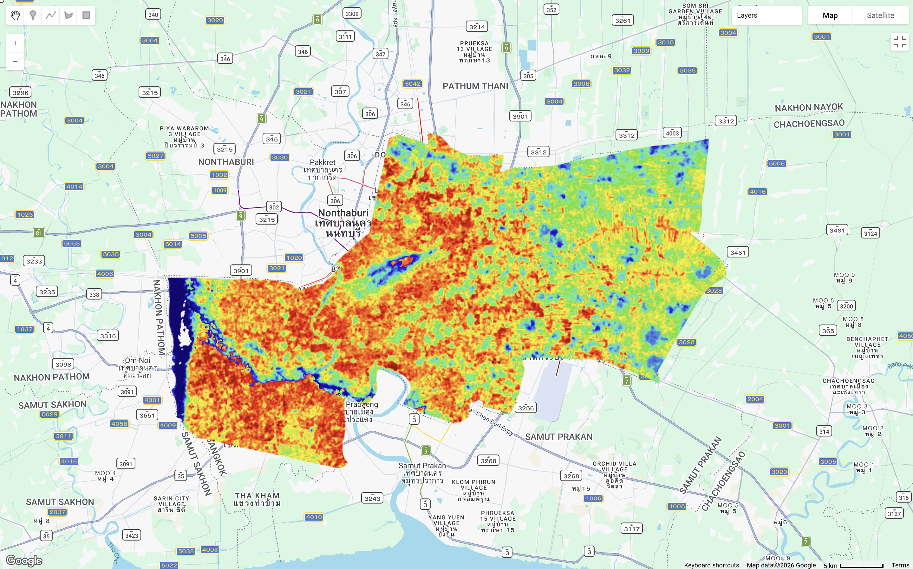
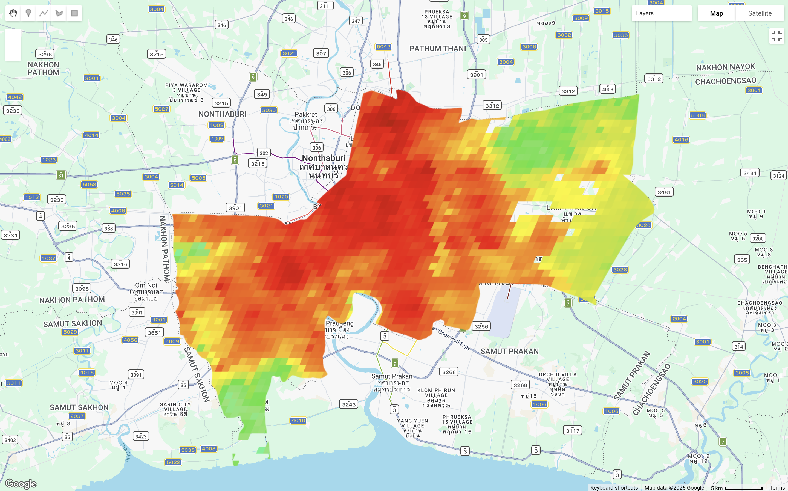
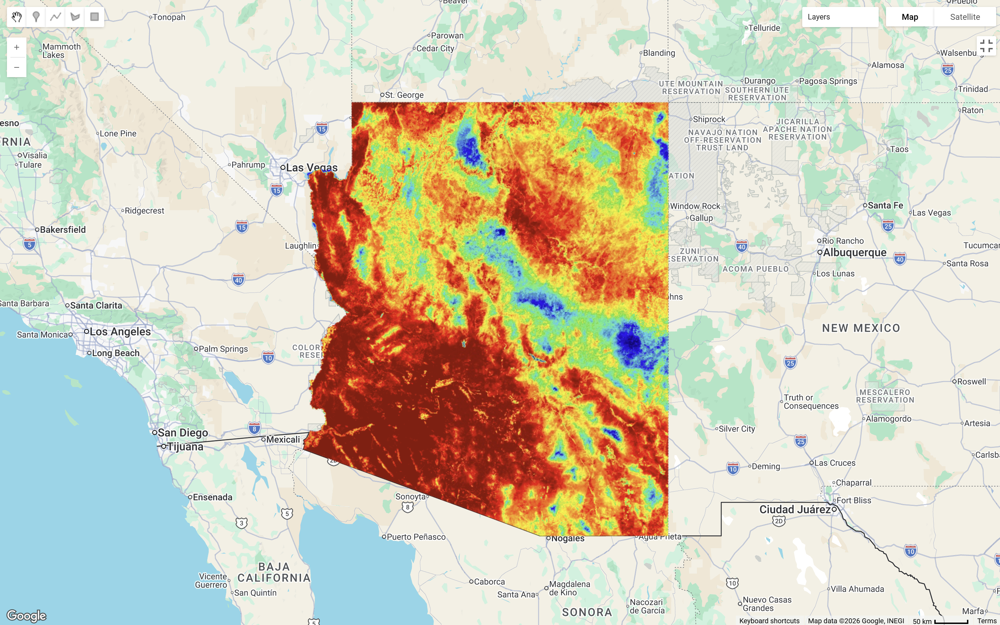
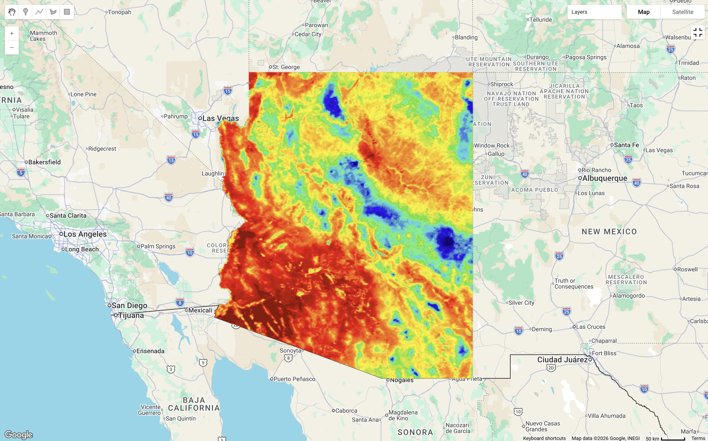
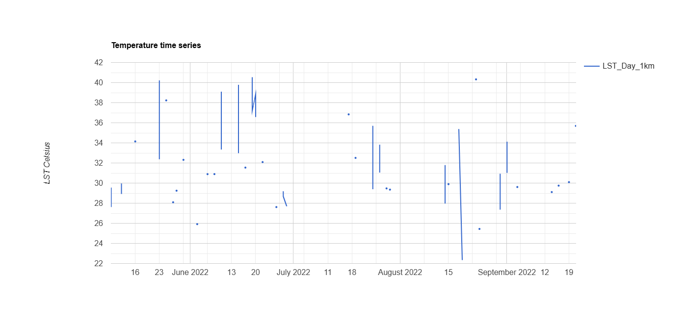
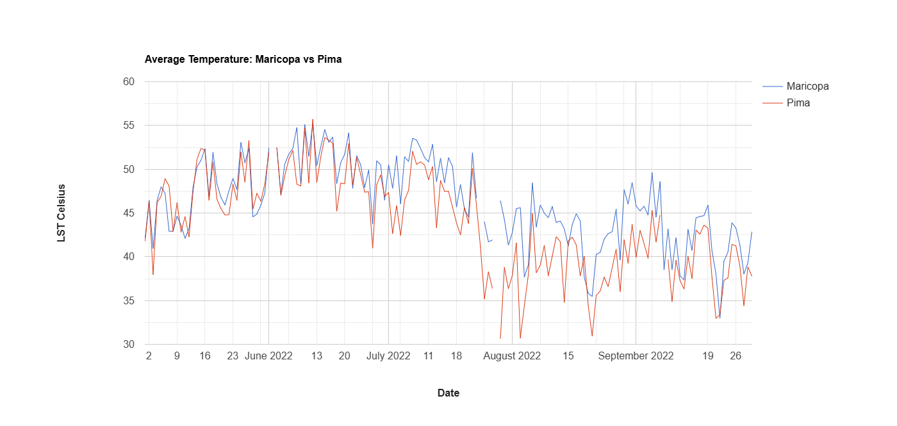
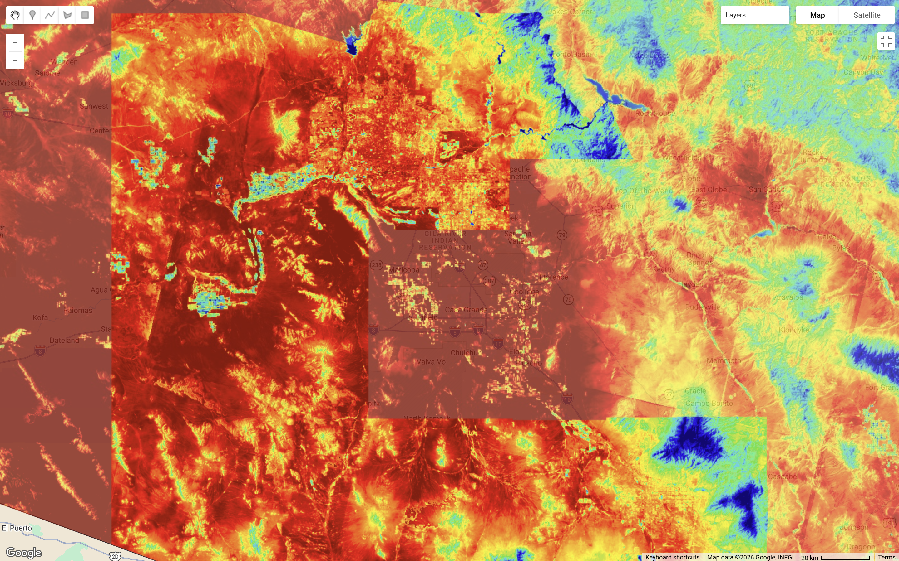
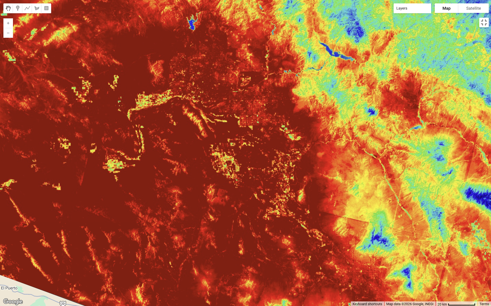
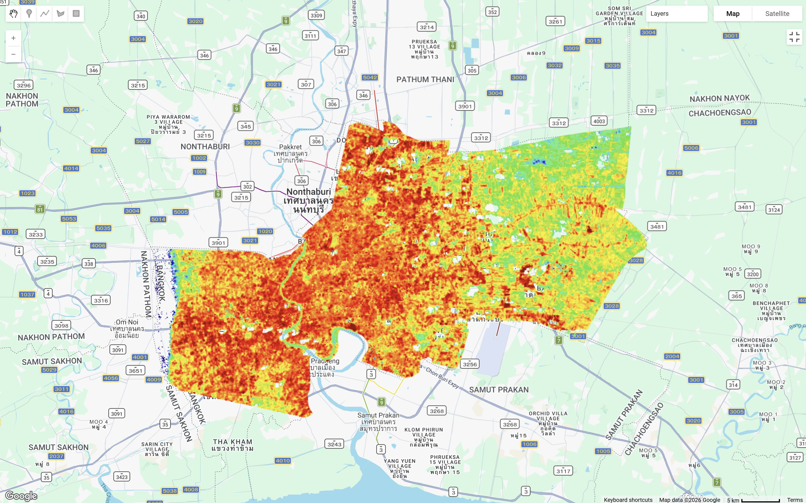

8 Temperature
This section will go through how to conduct temperature research through GEE. Building upon the early chapters of discussing Urban Heat Island Effect in Policy, this section will……
8.1 Summary
8.1.1 Land Surface Temperature
Land Surface Temperature (LST) is a parameter that reflects land-atmosphere interactions from regional to global scales as well as an indicator that influences the rate and timing of vegetation growth (Li et al. 2023).
8.1.2 LST in GEE
Try to look at different LST mapping under different climates.
Bangkok, Thailand is characterised by a hot, humid and rainy climate in summer.


Astonia, USA is characterised by an extremely hot dessert climate in summer.



Note that for MODIS the trade off here is that we get to plot time series but we simultaneously will lose the spatial element…
I wanted to run the all level 2 in the chart however, GEE says “Error generating chart: Response size exceeds limit” and so I narrowed down to two districts for comparison. Selected Maricopa and Pima below……

Looking at the chart it shows that the minimum temperature between the time series is a bit over 30 as a minimum and max temperature exceeding 50. Therefore, try changing minimum maximum temperature below,


GEE code for this practical can be found here.
| Strengths | Limitations |
|---|---|
|
8.1.3 Urban Heat Island Effect
8.1.3.1 Impacts
| Impacts | |
|---|---|
| Social | |
| Economic | |
| Environment |
8.1.3.2 Policy
8.2 Applications
8.2.1 LST Products
| Resolution | Products | Spatial Resolution | Temporal Resolution |
|---|---|---|---|
| Low | ASTER, Landsat Band 10 | 90 m, 30 m | 16 days revisit |
| Medium | MODIS, with Aqua and Terra | 1 km | Terra: N to S morning and Aqua: S to N afternoon, 1-2 days with 2 images a day |
| High | LSA-SAF (MSG/SEVIRI), GOES-R ABI, Copernicus Global Land Service / GlobTemperature | 3–5 km, 2–10 km, 0.05° |
8.3 Reflections
During my exploration in GEE, I also realised how cloud coverage can affect temperature outputs. Comparing the two cloud removing approaches has showed me how different pre-processing nethods can affect temperature outputs. Using cloud cover filter still left a suspicious cool edge on the left side of the city, whereas the QA_PIXEL mask removed that area entirely, suggesting it was likely to be clouds instead of a real temperature pattern. This made me realise that filtering by overall cloud cover is not always “the best” choice, especially in this case for temperature analysis, as cloud coverage can still remain in parts of the image. Given that, pixel level masking seems to be a better option for more reliable outputs, yet it also creates a trade-off in reducing the amount of usable data…

I feel like there is still a lot more to explore with LST, especially in terms of temporal resolution of images, atmospheric effects, and pre-processing methods in shaping the outputs, etc., probably something I would want to look into more later.